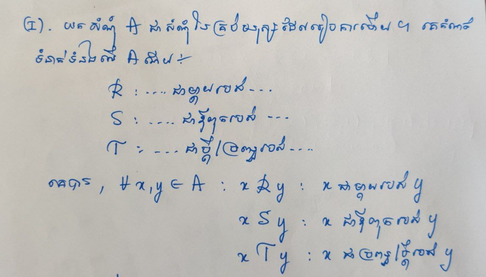
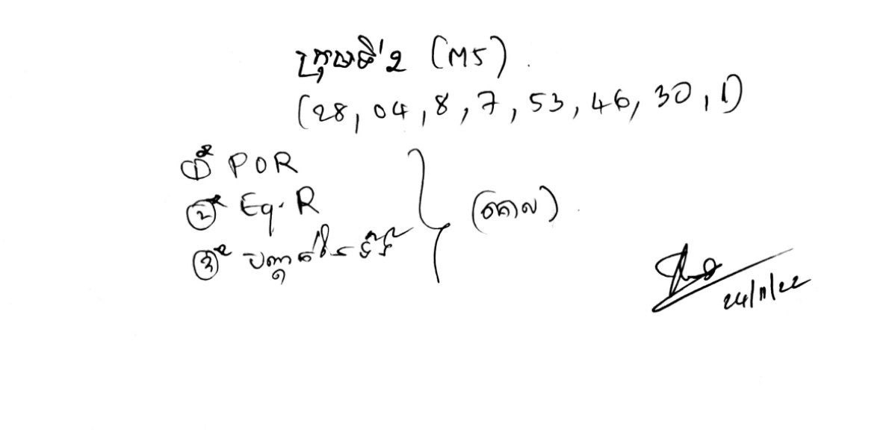
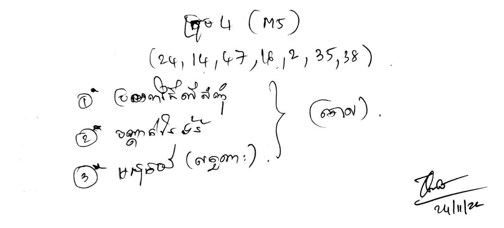
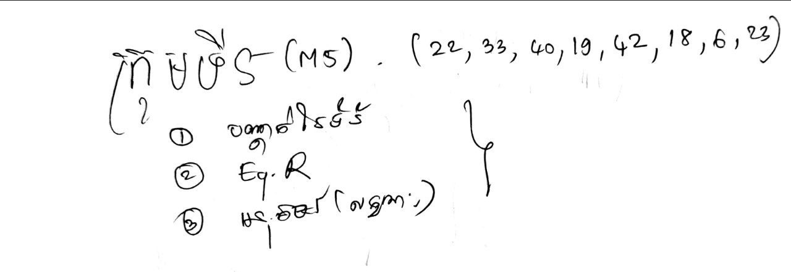

Group M5 - Final Task
Nov. 24th, 2022
ក្រុមទី ១ - M5

Let $\mathcal R$ be a relation defined on the set $A=\{1,2,3,4,5,6,7,8,9,10\}$ such that $$ \forall a, b \in A , \quad a\; \mathcal R\; b \Leftrightarrow a \mid b $$
- Show that $(A,\mathcal R)$ is a POSET.
- Decide whether $\mathcal R$ is totally ordering relation (ទំនាក់ទំនងលំដាប់គ្រប់) on $A$, why?
- Draw the Hasse diagram representing the relation $\mathcal R$ on the set $A$
- សិក្សាធាតុទាំង $8$ របស់ $A$ បើអាចមាន!
Given a relation $\mathcal R$ on $\mathbb{Z}$ defined by
- Is $\mathcal R$ an equivalence relation?
- If (i) is true, describe (សរសេរ) the equivalence classes.
- Find $\overline {1}$ and $\overline{0.3}$
- សរសេរសំណុំ $\mathbb Z\mid_{\mathcal R}$ បើអាច!

- $\text{ Mithuna } \;\mathcal R\circ \mathcal S\; \text{ Vicheka } $
- $\text{ Tola } \;\mathcal T\circ \mathcal S\; \text{ Sophy } $
- $\text{ Sothy } \;\mathcal T\circ (\mathcal R\circ \mathcal S)\; \text{ Kupheak } $
- $\text{ Makara } \;\Big(\mathcal R\circ \mathcal S\Big)^{-1}\; \text{ Kakda } $
-
If $\left\{A_i: i \in I\right\}$ is an indexed family of sets and $B$ is any set, then
- $\displaystyle A_j \subseteq \bigcup_{i \in I} A_i$, for each $j \in I$.
- if $B \subseteq A_i$, for all $i \in I$, then $\displaystyle B \subseteq \bigcap_{i \in I} A_i$,
- យក $I=[0,1] \subseteq \mathbb{R}$ និងគ្រប់ $i \in I$ គេតាង $A_i=(i-1, i+1) \subseteq \mathbb{R}$ ។ ចូរគណនា $$\displaystyle\bigcap_{i \in I} A_i\quad \text{and} \quad\displaystyle \bigcup_{i \in I} A_i$$
- Let $I=\{1,2,3\}, A_1=\{1,3,4,6,7\} A_2=\{1,4,5,7,8,9\}, A_3=\{2,4,7,10\}$. Find $\bigcap_{i \in I} A_i$ and $\bigcup_{i \in I} A_i$.
ក្រុមទី ២ - M5

Let $A = \mathbb Z+$ be a set of positive integers (សំណុំចំនួនគត់វិជ្ជមាន) and define a relation $\mathcal R$ on $A$ as follows:
- Prove that $(A,\mathcal R)$ is a POSET.
- Let $S = \{1,2,3,4,5,6,7,8\}$. Draw an arrow diagram of $\mathcal R$ និងសិក្សាធាតុទាំង $8$ របស់វា បើអាចមាន!
Let $\mathcal R$ be a relation defined on the set $A=\{1,2,3,4,5,6,7,8,9,10\}$ such that $$ \forall a, b \in A , \quad a\; \mathcal R\; b \Leftrightarrow a \mid b $$
- Show that $(A,\mathcal R)$ is a POSET.
- Decide whether $\mathcal R$ is totally ordering relation (ទំនាក់ទំនងលំដាប់គ្រប់) on $A$, why?
- Draw the Hasse diagram representing the relation $\mathcal R$ on the set $A$
- សិក្សាធាតុទាំង $8$ របស់ $A$ បើអាចមាន!
- $\text{ Mithuna } \;\mathcal R\circ \mathcal R\; \text{ Vicheka } $
- $\text{ Tola } \;\mathcal S\circ \mathcal T\; \text{ Sophy } $
- $\text{ Sothy } \;\mathcal T\circ (\mathcal R\circ \mathcal S)\; \text{ Kupheak } $
- $\text{ Makara } \;\Big(\mathcal R\circ \mathcal S\Big)^{-1}\; \text{ Kakda } $
If $A$ is a set, $B_i \subset A$ for each $i \in I$ and $B \subset A$, then
- $\displaystyle A-\left(\bigcup_{i \in I} B_i\right)=\bigcap_{i \in I}\left(A-B_i\right)$
- $\displaystyle A-\left(\bigcap_{i \in I} B_i\right)=\bigcup_{i \in I}\left(A-B_i\right)$
- $\displaystyle B \cap\left(\bigcup_{i \in I} B_i\right)=\bigcup_{i \in I}\left(B \cap B_i\right)$
- $\displaystyle B \cup\left(\bigcap_{i \in I} B_i\right)=\bigcap_{i \in I}\left(B \cup B_i\right)$
ក្រុមទី ៣ ថ្នាក់ M5

- $\text{ Mithuna } \;\mathcal R\circ \mathcal S\; \text{ Vicheka } $
- $\text{ Tola } \;\mathcal T\circ \mathcal S\; \text{ Sophy } $
- $\text{ Sothy } \;\mathcal T\circ (\mathcal R\circ \mathcal S)\; \text{ Kupheak } $
- $\text{ Makara } \;\Big(\mathcal R\circ \mathcal S\Big)^{-1}\; \text{ Kakda } $
យក $\mathcal R$ ជាទំនាក់ទំនងលើសំណុំ $\mathbb R$ ដែលកំណត់ដោយ
- Prove that $\mathcal R$ is an equivalence relation on $\mathcal R$.
- គណនា $\overline{0},\;$ $\overline{-2}\;$ and $\;\overline{\frac{1}{2}}$
- Show that $\overline{2}\neq \overline{\frac{1}{2}}$
- ចូរសរសេរ $\mathbb R{\mid_{\mathcal R}}$
ចូរសង់តាងផលបូក និងផលគុណរបស់សំណុំ $\mathbb Z_{15}$ រួចបញ្ជាក់ $\mathbb Z^*_{15}$ ។
ក្រុមទី ៤ ថ្នាក់ M5

If $A$ is a set, $B_i \subset A$ for each $i \in I$ and $B \subset A$, then
- $\displaystyle A-\left(\bigcup_{i \in I} B_i\right)=\bigcap_{i \in I}\left(A-B_i\right)$
- $\displaystyle A-\left(\bigcap_{i \in I} B_i\right)=\bigcup_{i \in I}\left(A-B_i\right)$
- $\displaystyle B \cap\left(\bigcup_{i \in I} B_i\right)=\bigcup_{i \in I}\left(B \cap B_i\right)$
- $\displaystyle B \cup\left(\bigcap_{i \in I} B_i\right)=\bigcap_{i \in I}\left(B \cup B_i\right)$
- $\text{ Mithuna } \;\mathcal S\circ \mathcal T\; \text{ Vicheka } $
- $\text{ Tola } \;\mathcal T\circ \mathcal R\; \text{ Sophy } $
- $\text{ Sothy } \;\Big(\mathcal T\circ \mathcal R\Big)\circ \mathcal S\; \text{ Kupheak } $
- $\text{ Makara } \;\Big(\mathcal S\circ \mathcal T\Big)^{-1}\; \text{ Kakda } $
- Prove that the function $f:\mathbb N\longrightarrow \mathbb N$ defined by $f(n) = n+ 1$ is surjective and injective.
- ចូរសង់តាងផលបូក និងផលគុណរបស់សំណុំ $\mathbb Z_{14}$ រួចបញ្ជាក់ $\mathbb Z^*_{14}$ ។
Given a relation $\sim$ on $\mathbb{Z}$ defined by $$ a \sim b\quad \Longleftrightarrow\quad a^2=b^2 $$
- Is $\sim$ an equivalence relation?
- If (i) is true, describe the equivalence classes.
- Find $\overline {-2}$ and $\overline{2}$
ក្រុមទី ៥ ថ្នាក់ M5

- $\text{ Mithuna } \;\mathcal R\circ \mathcal S\; \text{ Vicheka } $
- $\text{ Tola } \;\mathcal T\circ \mathcal S\; \text{ Sophy } $
- $\text{ Sothy } \;\Big(\mathcal S\circ \mathcal R\Big)\circ \mathcal S\; \text{ Kupheak } $
- $\text{ Makara } \;\Big(\mathcal T\circ \mathcal S\Big)^{-1}\; \text{ Kakda } $
Given a relation $\mathcal R$ on $\mathbb{Z}$ defined by
- Is $\mathcal R$ an equivalence relation?
- If (i) is true, describe (សរសេរ) the equivalence classes.
- Find $\overline {1}$ and $\overline{0.3}$
- សរសេរសំណុំ $\mathbb Z\mid_{\mathcal R}$ បើអាច!
គេអោយអនុគមន៍ $f:\mathbb R\longrightarrow \mathbb R$ កំណត់ដោយ $x\longmapsto f(x)=1-\frac{1}{x}$ ។
- ចូរសរសេរសំណុំ $\mathcal D(f)$ និង $\mathcal R(f)$
- ចូរសិក្សាលក្ខណៈរបស់ $f$
- យក $X=\{0,-1,1,3,4\}$ ។ ចូរសរសេរសំណុំ $f(X)$ ដែល $$f(X) = \Big\{f(x) \mid x\in X\Big\}$$
- យក $Y=\{-1,2,-2,1,3,2\}$ ។ ចូរសរសេរសំណុំ $f^{-1}(X)$ ដែល $$f^{-1}(Y) = \Big\{x\in \mathbb R^*\mid f(x)\in Y\Big\}$$
- ចូរសង់តាងផលបូក និងផលគុណរបស់សំណុំ $\mathbb Z_{13}$ រួចបញ្ជាក់ $\mathbb Z^*_{13}$ ។
ក្រុមទី ៦ ថ្នាក់ M5

- យក $f: A \rightarrow B$ កំណត់ដោយ $f(x)=x^2+14 x-51$។ ចូរពន្យល់ តើ $f$ ប្រកាន់ និង ពេញ ឬទេ? ក្នុងករណីគេយកសំណុំទាំងពីរ ខាងក្រោម៖ $$A=\mathbb R,\quad B=\{b \in \mathbb R \mid b \geq -100\}$$
- ចូររកឧទាហរណ៍បញ្ជាក់ថា៖ $f: \mathbb N \rightarrow \mathbb N$ ជាអនុគមន៍ (i) onto but not one-to-one (ii) neither one-to-one nor onto; (iii) both one-to-one and onto.
- $\text{ Mithuna } \;\mathcal T\circ \mathcal R\; \text{ Vicheka } $
- $\text{ Tola } \;\mathcal S\circ \mathcal T\; \text{ Sophy } $
- $\text{ Sothy } \;\Big(\mathcal S\circ \mathcal R\Big)\circ \mathcal S\; \text{ Kupheak } $
- $\text{ Makara } \;\Big(\mathcal S\circ \mathcal T\Big)^{-1}\; \text{ Kakda } $
-
If $\left\{A_i: i \in I\right\}$ is an indexed family of sets and $B$ is any set, then
- $\displaystyle A_j \subseteq \bigcup_{i \in I} A_i$, for each $j \in I$.
- if $B \subseteq A_i$, for all $i \in I$, then $\displaystyle B \subseteq \bigcap_{i \in I} A_i$,
- យក $I=[0,1] \subseteq \mathbb{R}$ និងគ្រប់ $i \in I$ គេតាង $A_i=(i-1, i+1) \subseteq \mathbb{R}$ ។ ចូរគណនា $$\displaystyle\bigcap_{i \in I} A_i\quad \text{and} \quad\displaystyle \bigcup_{i \in I} A_i$$
- Let $I=\{1,2,3\}, A_1=\{1,3,4,6,7\} A_2=\{1,4,5,7,8,9\}, A_3=\{2,4,7,10\}$. Find $\bigcap_{i \in I} A_i$ and $\bigcup_{i \in I} A_i$.
Given a relation $\mathcal R$ on $\mathbb{Z}$ defined by
- Is $\mathcal R$ an equivalence relation?
- If (i) is true, describe (សរសេរ) the equivalence classes.
- Find $\overline {1}$ and $\overline{0.3}$
- សរសេរសំណុំ $\mathbb Z\mid_{\mathcal R}$ បើអាច!
ក្រុមទី ៧ ថ្នាក់ M5

- $\text{ Mithuna } \;\mathcal T\circ \mathcal S\; \text{ Vicheka } $
- $\text{ Tola } \;\mathcal T\circ \mathcal T\; \text{ Sophy } $
- $\text{ Sothy } \;\Big(\mathcal R\circ \mathcal R\Big)\circ \mathcal S\; \text{ Kupheak } $
- $\text{ Makara } \;\Big(\mathcal R\circ \mathcal S\Big)^{-1}\; \text{ Kakda } $
- ចូរសង់តាងផលបូក និងផលគុណរបស់សំណុំ $\mathbb Z_{13}$ រួចបញ្ជាក់ $\mathbb Z^*_{13}$ ។
Given a relation $\mathcal R$ on $\mathbb{Z}$ defined by
- Is $\mathcal R$ an equivalence relation?
- If (i) is true, describe (សរសេរ) the equivalence classes.
- Find $\overline {1}$ and $\overline{0.3}$
- សរសេរសំណុំ $\mathbb Z\mid_{\mathcal R}$ បើអាច!
Recent Posts
- A Note on the Variation of Parameters Method | 11/01/17
- Group Theory, Part 3: Direct and Semidirect Products | 10/26/17
- Galois Theory, Part 1: The Fundamental Theorem of Galois Theory | 10/19/17
- Field Theory, Part 2: Splitting Fields; Algebraic Closure | 10/19/17
- Field Theory, Part 1: Basic Theory and Algebraic Extensions | 10/18/17